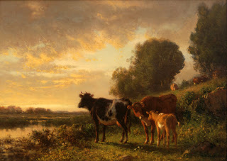

Chullin 83 - How Long is "One Day" for Cow and its Offspring?
On four days of the year it could be assumed that whoever is buying an animal intends to slaughter it immediately. Therefore, on the eve of these days a seller who sells an animal, if he already sold its parent or offspring today, is required to inform the buyer and say "I already sold its mother today." The buyer then will not come to violate the prohibition to slaughter the animal and its offspring on one day. These four occasions are: last day of Succot (Simchat Torah), Passover, Shavuot, Rosh HaShanah, and in Galilee also Yom Kippur, because there they prepared for Yom Kippur with lavish feasts.
What is considered "one day" regarding the prohibition of "it and its offspring?" As Ben Zoma interpreted, "one day" is mentioned describing the creation of the world, and there it means "there was evening and there was morning, one day," and "one day" is mentioned for the "cow and its offspring." In both cases the day starts in the evening at sunset and continues on the next day till sunset.
Art: William Hart - Sunset With Cows